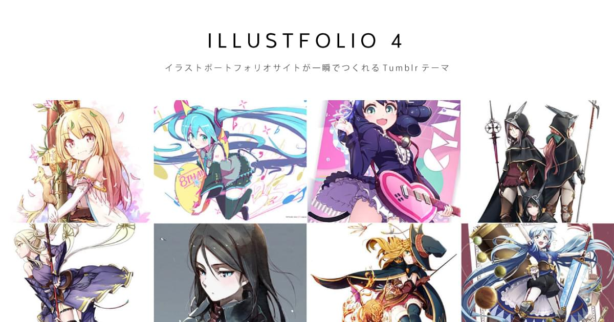

Illustfolio 4 ドキュメントへようこそ
Illustfolio 4 はイラストレーターのための Tumblr テーマです。 @sanographix が作っています。
デモを見る
デモページはこちらです。
対応ブラウザ
下記ブラウザの最新版のみサポートします。
- Microsoft Edge
- Win / Mac 版 Chrome, Firefox
- macOS Safari
- iOS Safari
- Chrome for Android
インストールする
下記のリンクよりインストールできます。
Installモバイルレイアウトのチェックを外す
- Tumblr のテーマカスタマイズ画面を開いて 「詳細設定」の「デフォルトのモバイルテーマを使用」「Google AMPを有効にする」をそれぞれオフにしてください。
- このチェックを外すことでスマートフォンでもIllustfolioが表示されます
各項目のカスタマイズ
レイアウトを決める

Illustfolio 4 は、「サムネイルサイズ」「サムネイル間の余白」の設定を変えることで、トップページをお好みのレイアウトで表示できるテーマです。
まずデザイン設定画面に遷移し、「Thumbnails Size」でお好みの大きさを選んでください。次に「Thumbnails Margin」で余白の量を調整してください。
あまり大きいサムネイルで表示したくない…という方は、「Thumbnails Size」に「XS」や「S」を、「Thumbnails Margin」に「Wide」を選択するとよいでしょう。逆に、大きいサムネイルで表示したい方は、「Thumbnails Size」に「L」や「XL」を、「Thumbnails Margin」に「Narrow」や「None」を選択するとよいでしょう。なお、デモページでは「L」の「Narrow」を設定しています。
記事数を決める
デザイン設定画面「詳細設定」にある「ページごとの投稿」の数を調整します。先の項目で「XS」「S」にした場合は15記事、「M」「L」「XL」の場合は12記事にすることをおすすめします。（サムネイルが揃って見えます）
その他の設定をする
テーマオプション
| Title Logo | ブログタイトルを画像に置換できます。透過png推奨。表示させたい2倍のサイズで作成すると高解像度ディスプレイで綺麗に見えます（その場合、後述の「Title Logo Width」に表示させたい横幅を入力してください）。 |
|---|---|
| Body | 本文のフォントを指定できます。 デフォルト: Helvetica |
| Crop Thumbnails | トップページのサムネイルをトリミングするか選択できます。有効にしておくことをおすすめしますが、サイズがほぼ決まっている画像（書影など）のみを投稿したい場合、無効にすると表示が改善されることがあります。 デフォルト: 有効 |
| Show Tag List | ページ下部にタグ一覧を表示します。なお非公開ブログを作成するときは無効にしてください（公開ブログでしかタグを取得できないためです）。 デフォルト: 有効 |
| Show Profile Section | ページ下部にプロフィールを表示します。 デフォルト: 有効 |
| Show Index Entry Footer | トップページのサムネイル下部にLikeやReblogボタンを表示します。 デフォルト: 無効 |
| Single Column Mode | トップページのグリッド表示をやめて1カラムで表示します。ブログ的な表示にしたい場合にご利用ください。 デフォルト: 無効 |
| Title Logo Width | タイトルロゴの横幅を数値で入力します（単位: px）。何も入力しない場合、画像を等倍で表示します。
例 150
|
| Your Name | プロフィールに表示する名前を入力できます。 |
| Profile | プロフィールに表示する本文を入力できます。簡単な自己紹介を入力するとよいでしょう。 |
| Your Website URL | 入力すると、プロフィールセクションにウェブサイトへのリンクを表示できます。
例 http://www.sanogrpahix.net
|
| Your Twitter Username | 入力すると、プロフィールセクションにTwitterアカウントへのリンクを表示できます。
例 sanographix
※ アカウント名だけ入力してください（URLは不要です） |
| Your Facebook Username | 入力すると、プロフィールセクションにFacebookアカウントへのリンクを表示できます。
例 sanographixnet
※ アカウント名だけ入力してください（URLは不要です） |
| Your Pixiv ID | 入力すると、プロフィールセクションにPixiv IDへのリンクを表示できます。
例 536147
※ 数字だけ入力してください（URLは不要です） |
| Your Instagram Username | 入力すると、プロフィールセクションにInstagramアカウントへのリンクを表示できます。
例 sanographix
※ アカウント名だけ入力してください（URLは不要です） |
記事を投稿する
- イラストの投稿には、「画像」形式で投稿することを強く推奨します。
- テキスト投稿よりも画像投稿のほうが画像の解像度を高く投稿できるためです
よくある質問
Q: ブログを非公開にしたところパスワード以外にも認証を求められる
オプション「Show Tag List」を無効にすると解決します。（タグ一覧を取得するためにブログが公開状態でなければなりません）
Q: テーマオプションで「Thumbnails Size」や「Thumbnails Margin」を変更しても反映されず、シングルカラムになってしまう
オプション「Single Column Mode」を無効にすると解決します。
Q: ヘッダ画像の大きさや比率を固定することはできますか
できません。さまざまな縦横比の画像をさまざまな大きさの端末から閲覧しても破綻せず表示させるためです。
Q: トップページで複数枚の画像投稿（フォトセット）に対応していますか
フォトセット投稿では複数画像の1枚目のみトップページに表示します。これはグリッドレイアウトとフォトセットの両立がテーマの構造上困難であるためです。なお、シングルカラムモードは複数枚表示に対応します。
トップページでサムネイルが表示されない投稿があるのはなぜですか
「テキスト投稿」や「リンク投稿」など、サムネイルを生成しない投稿タイプでは表示しません。サムネイルを表示できる投稿タイプは「画像投稿」または「フォトセット投稿」です。
Q: そのほか不具合かな？ と思ったら
sanographix作のテーマ以外で、同様の現象が発生するか確認してください（Tumblrのデフォルトテーマで確認するのがベターです）。別のテーマでも同様の現象が発生する場合は、Tumblr側の仕様または不具合の可能性が高いです。Tumblr側のサポートに問い合わせてください。
Q: 本当に無料ですか？
はい、無料です。
気に入っていただけたら、何か寄付していただけるとありがたいです（任意です）
http://www.amazon.co.jp/registry/wishlist/2QLOE7F0CGUSX
Q: 商用利用してもいいですか？
問題ありません。ただし Tumblr の利用規約に違反するコンテンツには使えません。
Q: HTML や CSS を改変してもいいですか？
はい。MIT ライセンスですのでライセンスの範囲内で自由にカスタマイズできます。
それ以外の質問
よくある質問をまとめたのでご参照ください。
サポートページへ上記リンクでも解決しない場合、メールフォームよりお問い合わせください。なお、HTML/CSS/JSのカスタマイズについてのサポートは行っていません。
ポートフォリオ関連書籍のごあんない
私の所属する同人サークル『konel』で、「ポートフォリオサイトをつくる」をテーマにした同人誌を作りました。
（Illustfolio 4 の開発裏話も載ってます）